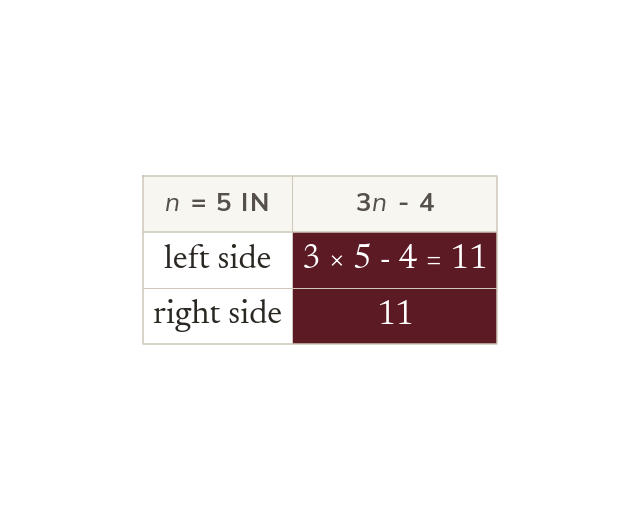

Checking by substitution
Substitute a solution back in: both sides must match. A negative length signals an error in the equation.
Substituting a solution back into the original equation checks it, since both sides must then give the same value. A solution that makes no sense in context, such as a negative length, signals an error in the equation rather than the arithmetic.